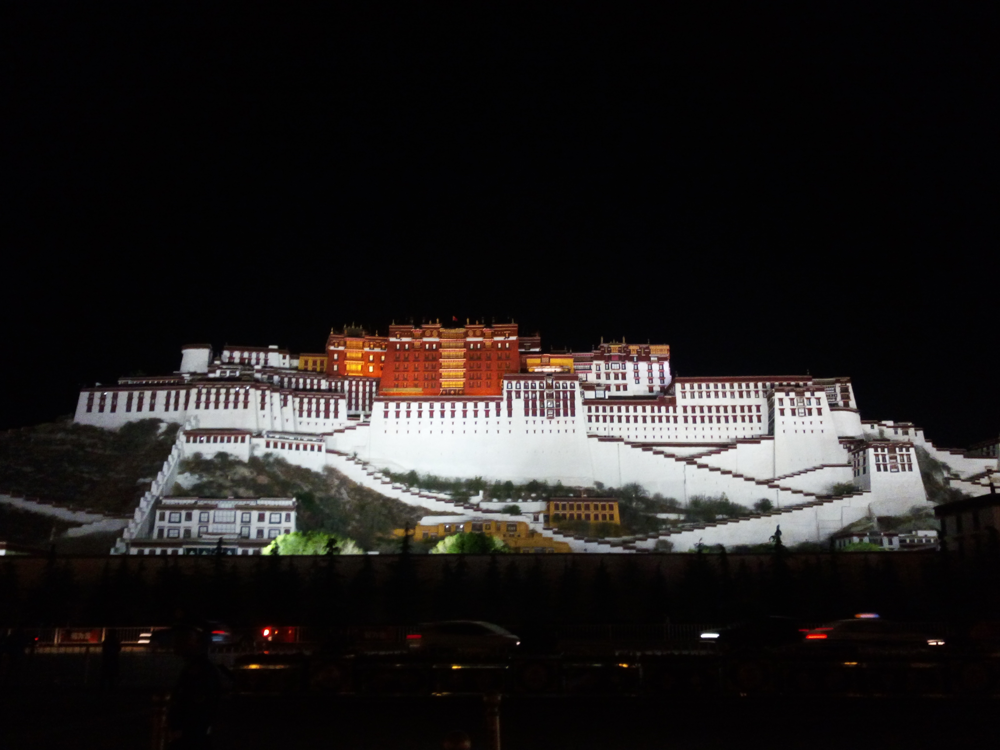

色拉寺一角
色拉寺“无名”大石头

色拉寺“辩经”
在去西藏之前查了下网上关于应对高原反应的建议，最后得到的结论就是：每个人的 高原反应因其体质的不同而不同。带着这个“没有卵用”的结论，忐忑的踏上了西藏囧途。 越来越接近西藏，我高反来之前的紧张越来越明显。不过，当我呼吸到拉萨第一口 空气的时候，只是感到了含氧量些微的不同，身体并没有出现明显的不适。我因此 开始庆幸我的高反来的这么温柔，就在第二天的晚上，我感到 头痛欲裂，心跳异常的快，感觉可能要挂了，一整晚翻来覆去基本没睡。后来吃了些药， 喝了很多热水，到第三天晚上的时候高反的症状基本退了。（多喝热水真的很有用！）
白天的布达拉宫
晚上的布达拉宫
白天的布达拉宫在蓝天白云的衬托下看起来很雄伟，晚上再看的时候，美的像一幅画。 第一眼看到这幅巨画的时候，我有心动的感觉，就像小时候喜欢班上的女同学一样。
布达拉宫里面存放着各世达赖喇嘛的灵塔，这些所有的灵塔之中只有一个没有存放达赖喇嘛 的肉身，那就是第六世达赖喇嘛——仓央嘉措。这人是颇受争议的一世达赖喇嘛，他是个情种， 曾经想让所有的僧人都还俗，后来被流放，到处写情诗。作为转世灵童，他又要修行，所以他 一边念经一边对心上人念念不忘，写下那句“不负如来不负卿”。
色拉寺一角
色拉寺“无名”大石头
色拉寺“辩经”
辩经是色拉寺最吸引游客的一个活动了，众僧人每三四个人分为一个小组互相探讨 佛学问题，旁边有年老的高僧作监督，就像小时候我们课堂上的讨论一样。由于他 们用的藏语，我看个意思很快就走开了。从他们的状态来看，我觉得有的人很认真， 有的人在偷懒，跟小时候我们课上的小组讨论一样一样的。

“五体投地”的朝拜者
朝拜者很多，这个是寺庙门前的朝拜者，他们每天都会在门口这样磕头磕上好几个 小时，这让我感到佩服。不过，当我看到大昭寺外的一个“在路上”的朝圣者之后， 我的心里只剩下敬畏。她是一个女人，她枯皱的脸和黝黑粗壮的胳膊形成鲜明的对比， 让我很难看出她的年纪。衣衫褴褛，朝圣用的工具是她仅有的“财产”。人群将目光 聚集在她的身上，她的目光透过人群望着她朝拜的方向、眼神坚毅，我想她在跟她的神 交流。我已经不能够对着她拍照了，我只能敬畏的站在远远的角落里感受她的虔诚。
我想带走一片云彩
羊卓雍错
羊湖
第一眼看到纳木错的时候，我居然又有种心动的感觉，就像后来又喜欢 上新班级的女同学一样。纳木错海拔4700多米、湖水纯净无比， 也称天湖、灵湖。纳木错是我最期待的一站，她高冷、纯洁，我相信任何人 看到纳木错都会为之倾倒。我在纳木错花了很少的时间拍照，只想更多的看她 几眼。不知怎的，就想到了大话西游至尊宝和紫霞的那段“看来我不应该来”的对白。
珠峰
God are you there? It'e me, Jesus.
演出很震撼，公主很美
在西藏男的称为“扎西”，女的称为“卓玛”。在曲真(女主人的名字)的家里，曲真倒上 青稞酒和酥油茶之后开始讲解当地的风俗习惯。听到“一夫多妻”和“一妻多夫”的时候，我的三观 被刷新了，曲真说自己有两个扎西，晚上睡觉轮换着睡。把自己房门上挂着老大的东西，老二 看到后就不会进来；把房门上挂着老二的东西，老大看到之后就不会进来。所以，她也不知道孩子的 父亲是哪一个。pps.一夫多妻和一妻多夫并不是说可以随便娶，而是说一个卓玛可以娶互为 亲兄弟的扎西，一个扎西可以娶互为亲姐妹的卓玛。
最后一首非常喜欢的勇气和自由之歌《GoWest》